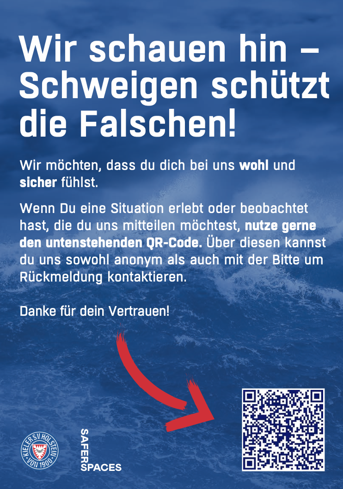

UEFA Women's EURO 2025
Erneut fester Bestandteil des Safeguarding-Konzepts bei der Frauen-EM.
Case Study →Proof of Concept
Sowohl bei der UEFA EURO 2024 als auch der UEFA EURO 2025 in der Schweiz war saferspaces als Rapid-Response-Mechanismus in allen Spielorten im Einsatz – dokumentiert und verlinkt auf uefa.com als Teil des Human-Rights-Programms.
Zur UEFA-Dokumentation →"Spectators can also reach the dedicated team through this link: euro2024.saferspaces.io. The technical set-up is supported by SAFER, a Football Supporters Europe-led project funded by the European Commission."
Quelle: uefa.com →Fan-Resonanz
saferspaces wurde bei der UEFA EURO 2024 nicht nur eingesetzt, sondern aktiv von den Fans registriert und positiv bewertet. Ein sichtbarer Meldekanal wirkt auf die gesamte Fanerfahrung – und auf die Wahrnehmung des Turniers als Ganzes.
60 %
der Besucher:innen der UEFA EURO 2024 registrierten saferspaces und bewerteten es als positive Neuerung
— Erhebung der europäischen Fan-Vertretung
Herausforderungen
Die Anforderungen steigen – saferspaces bietet ein durchgängiges Sicherheitssystem, das von der ersten Meldung bis zur detaillierten Auswertung greift.
Lizenzauflagen verlangen Schutzkonzepte mit dokumentierten Meldewegen. saferspaces bildet die Anforderungen von DFB, DFL und UEFA in einem System ab – und ist Teil der DFL/DFB-Initiative für Stadioninnovationen.
QR-Codes in allen Sektoren, Eingängen und Sanitärbereichen decken jeden Bereich ab. Was sonst deutlich mehr Personal erfordern würde, skaliert ohne proportional steigende Kosten.
Im Stadion eine fremde Person anzusprechen ist schwer. Ein sichtbares, anonymes Meldesystem erreicht auch Gruppen, die Stadien bisher gemieden haben.
Automatische Spieltagsberichte mit Heatmaps und Filterung nach Sektor, Uhrzeit und Vorfallsart – für gezielte Prävention statt Nachbearbeitung.
Mehrwerte
Nach jedem Spieltag steht ein fertiger Bericht bereit – mit Grafiken, Vorfallsdynamiken und Verbandsdokumentation. Ohne manuelle Nachbearbeitung.
Lückenlose Dokumentation jedes Vorfalls – von der Erstmeldung bis zur Fallschließung. Nachweisbare Compliance gegenüber DFB, DFL und Behörden.
Ein sichtbares Meldesystem senkt die Hemmschwelle für Gruppen, die Stadien bisher gemieden haben. Mehr Sicherheitsgefühl bedeutet höhere Auslastung.
Über den Vereins-Link erreichen Fans das Team von jedem Standort – auch bei Auswärtsspielen oder auf der Anreise. Schutz endet nicht am Stadiontor.
Vollständig cloudbasiert, keine IT-Infrastruktur nötig. Einzige Voraussetzung: stabile Netzabdeckung im Stadion.
Keine personenbezogenen Daten, keine Gerätekennungen. Anonymität technisch sichergestellt, nicht nur versprochen. Hosting auf deutschen Servern.

Rapid Report
Nicht nur im Stadion, auch in Nachwuchsleistungszentren und Vereinsstrukturen braucht es niedrigschwellige Meldewege. Rapid Report ermöglicht anonyme Meldungen – auch ohne Team vor Ort und ohne Echtzeit-Reaktion.
Referenzen
Erneut fester Bestandteil des Safeguarding-Konzepts bei der Frauen-EM.
Case Study →
Teil des offiziellen Safeguarding-Konzepts in allen 10 Stadien.
Case Study →
Niedrigschwellige Meldeoption im Stadion.

Niedrigschwellige Meldemöglichkeit im Holstein-Stadion.

Anonyme, digitale Meldeoption in der AVNET Arena.

Safeguarding für 50.000 Fans auf dem Heiligengeistfeld.

Safeguarding auf Europas größter Fan Mile.

Safeguarding am Mainufer mit Blick auf die Skyline.

Safeguarding für 700.000 Fans im Olympiapark.

Direkter Kontakt zum Awareness-Team seit 2025.
Case Study →
QR-Codes auf Screens + Venue-Link für alle Besucher:innen.

Awareness-Infrastruktur für eine der größten Gaming-Messen.

Barrierefreie Meldewege auf dem gesamten Festgelände.
Case Study →
Kulturfestival mit über 1,5 Mio. Besucher:innen jährlich.

Seit 2022 fester Teil des Awareness-Konzepts.

Awareness auf einem der größten Seefeste Deutschlands.

Echtzeit-Awareness im Club – Teams reagieren sofort auf Meldungen.

Drei Floors, 1.000 m² – Awareness im Frankfurter Flagship-Club.

Awareness im Kultur- und Konzerthaus auf dem ehemaligen Güterbahnhof.

Meldekanal im soziokulturellen Zentrum mit über 300 Veranstaltungen pro Jahr.

Awareness auf der gesamten Club Tour 2025.
Case Study →
Awareness auf dem Kunst- und Kulturfestival am Millerntor-Stadion.

Awareness beim größten Kinderfest Schleswig-Holsteins.


In einer persönlichen Demo zeigen wir euch, wie saferspaces in eurem Stadion, Verein oder Nachwuchsleistungszentrum funktioniert.